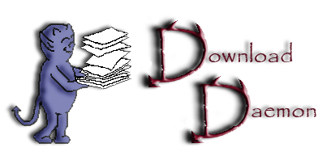

DownloadDaemon

Description
DownloadDaemon is a comfortable download-manager with many features like one-click-hoster support, etc. It can be remote-controled in several ways (web/gui/console clients), which makes it perfect for file- and root-servers, as well as for local use.
Features
- Completely Remote-Controlable with a Console, GUI or Web-Based client
- Support for Special Hosters (rapidshare.com/uploaded.to/netload.in/megaupload.com/youtube.com/...)
- Automatic Captcha-Recognition
- Few Dependencies for Easy Use on Embedded Systems (NAS/Media-Server)
- Platform-Independent
- Automatic Reconnects to Bypass IP-Based Bandwidth-Limits
- Easy to Extend with Plugins
- Automatic archive extraction for rar, zip, tar.gz and tar.bz2 archives
- Alternating Download-proxys to bypass Bandwidth-limits
- Ability to precheck all links for their size and availability before downloading
- Download timing: Let your fileserver do the download-work at night and enjoy your internet speed at day
-
| Operating System: |
32-bit MS Windows (NT/2000/XP), All POSIX (Linux/BSD/UNIX-like OSes), Cygwin (MS Windows), Vista |
| Language: |
English |
| Intended Audience: |
End Users/Desktop, System Administrators, Advanced End Users |
| User Interface: |
Console/Terminal, Non-interactive (Daemon), Web-based, Qt |